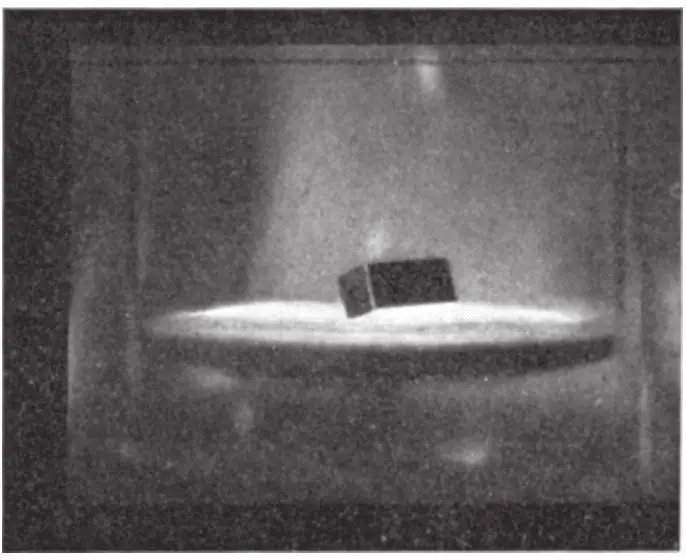

英文
英文阿卡迪耶夫
编者按
俄罗斯物理学家阿卡迪耶夫在本文中报道了他借助超导体对悬浮现象所做的观察。他注意到，在重力的作用下被拉向磁体表面的抗磁物质（其实就是传统的“非磁性”物质）可以停留在其上方。譬如说，一个1厘米长的条状磁体可以飘浮在直径约为20米的铜球上方约1厘米处。然而，为了避免磁体落到具有地球尺寸大小的抗磁性球体上，需要在磁体下方放置一个超导体。阿卡迪耶夫通过一个在置于液氦中的凹面铅盘上方悬浮的小磁体来演示上述效应。如今，利用液氮和高温超导体技术，阿卡迪耶夫悬浮已成为物理课堂中一个常用的演示。 英文
假设磁场排斥抗磁体，我们也许可以看到，当抗磁粒子因为重力作用而落向磁体时，其将会处于条形磁体中心面所在空间的某个位置上，与条形磁体相距一定距离。通常这个“卫星”可以围绕平衡点作弹性振动，得到某一曲线轨迹。而径向和经向的振动周期接近于与磁性无关的卫星围绕具有相同质量的物体作开普勒转动的周期。若有几个这样的粒子则会围绕磁体取一定的排列。这种物体的组合在性质上是静态行星系，与开普勒动力学的行星系有所不同。 英文
然而，由此形成的系统只能是小尺寸的。最远物体的轨道可能不会大于几米，对于小块磁化了的铁陨石，其量级仅为几毫米。 英文
计算表明，条形磁体与大块抗磁体间可在空间中保持一定的距离。因此1厘米长的磁体将与直径约为20米的铜球表面保持1厘米的距离。而对铋球和碳球而言，则其直径分别需要达到300米和3,000米才能实现上述距离。为了防止磁体落到具有地球尺寸大小的抗磁球体上，该球体必须由最强的抗磁物质组成，或是一个超导体。然而，在这种情况下，只要在磁体下方放置一个超导体就能实现上述情况。 英文
磁体靠近超导半空间表面时在超导体内部产生该磁体的映像。对一个普通的钢磁体而言，这将导致退磁；而对一个含有铁–镍–铝的钢磁体，在这种力的作用下将被排斥在超导半空间的水平面以外，即使没有支撑物也能悬浮（“漂浮”）在该水平面上方。因此，一种静态行星系中的情况可能在实验室中重现。但被与磁体相邻的超导体所屏蔽的地球，将以与万有引力相同大小的力把磁体推开。附图的照片展示了尺寸为4毫米×4毫米×10毫米的磁体，悬浮在充有液氦的杜瓦瓶内直径为40毫米的凹面铅盘的上方。 英文

在莫斯科物理问题研究所卡皮查教授的热心帮助下，检验这些观点的实验才得以顺利开展。 英文
磁体的抗磁力越低，则磁体本身必然越小。例如，碳钢磁体在其尺寸小至0.5毫米×9毫米时才可能“浮起”。将微观尺度中的小磁体散在物体表面上，就有可能直接揭示出超导杂质的存在，因为磁性粒子将会滚到没有超导电性的地方。 英文
（沈乃澂 翻译；赵见高 审稿）